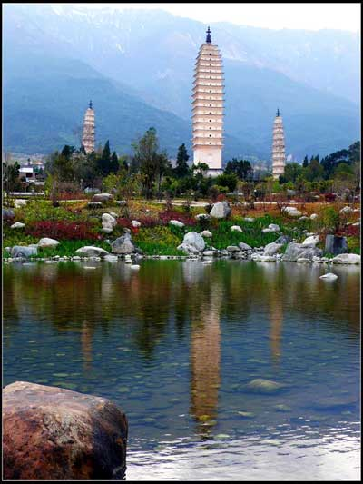
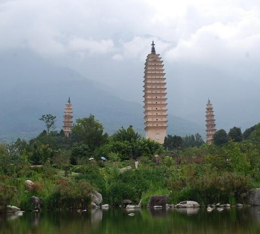
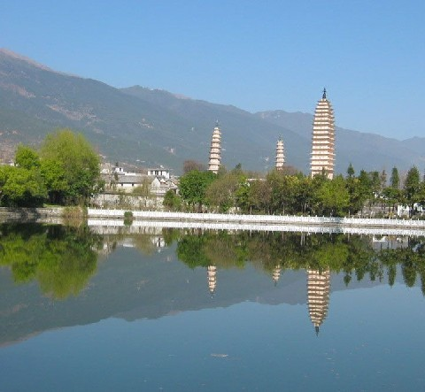
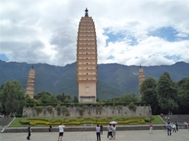
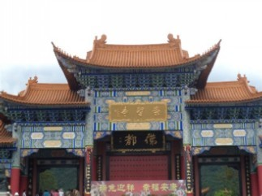
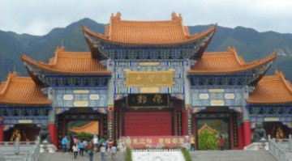
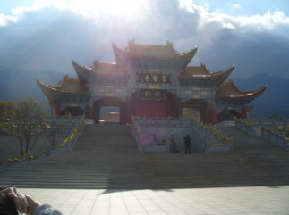
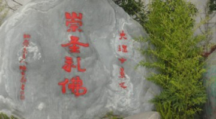

云南之旅13浏览大理三塔寺
#1 云南之旅13浏览大理三塔寺 作者：蓝天蓝 发表时间：2011-7-6 8:41:08
云南之旅13浏览大理三塔寺
时间2011.6.24.下午14.00
大理的三塔寺是大理的国庙，因为在大理历史上出现的11个皇帝就有9个在三塔寺出家了。三塔寺最出奇的地方还有就是没有地基，是盖一层，在外边填一层土，这样慢慢搭建起来的，就是这样没有地基的三塔寺，在地震中居然没有倒塌，只是有点倾斜，现在禁止大家攀登了，只能在外边看看。
 
 
崇圣寺是供大家参观的地方，被称为 佛都 ，而且在2006年7月聘请了108位得道高僧位崇圣寺开光，里面的佛像都是真金塑身的，大雄宝殿里面供奉着大肚弥勒佛，观世音，斗战胜佛，济公活佛，......
在大雄宝殿里面，不让照相，只是照了崇圣寺的外边。
 
 
#2 Re:云南之旅13浏览大理三塔寺 作者：被感动的人 发表时间：2011-7-6 14:01:01
总算到三塔了~~~~~~~~~~#3 Re:云南之旅13浏览大理三塔寺 作者：掌棋如烟 发表时间：2011-7-6 14:12:27
倒数第二张的照片很有感觉啊,好像下一个出场的就是孙悟空要出来降妖伏魔了...
#4 Re:Re:云南之旅13浏览大理三塔寺 作者：被感动的人 发表时间：2011-7-6 14:53:32
引用：我想起小雷音
原文由 掌棋如烟 发表于 2011-7-6 14:12:27 :倒数第二张的照片很有感觉啊,好像下一个出场的就是孙悟空要出来降妖伏魔了...
#5 Re:Re:Re:云南之旅13浏览大理三塔寺 作者：掌棋如烟 发表时间：2011-7-6 21:24:36
引用：
原文由 被感动的人 发表于 2011-7-6 14:53:32 :
我想起小雷音
着挖,就是这个,要不咋说你是我姐呢,想一起去了
［ 被感动的人 于 2011-7-6 21:36:51 时花20金币送鲜花一朵］
#6 Re:云南之旅13浏览大理三塔寺 作者：隐藏菜系 发表时间：2011-7-7 8:43:06
第一张好美啊~~#7 Re:云南之旅13浏览大理三塔寺 作者：死劲哭 发表时间：2011-7-7 10:41:42
第一张照片无论是从对光与色彩的理解还是视角，都体现出了作者的审美意境。尤其是左下角深色石头的纳入，使整个构图轻重有秩，动中藏静。赞一个